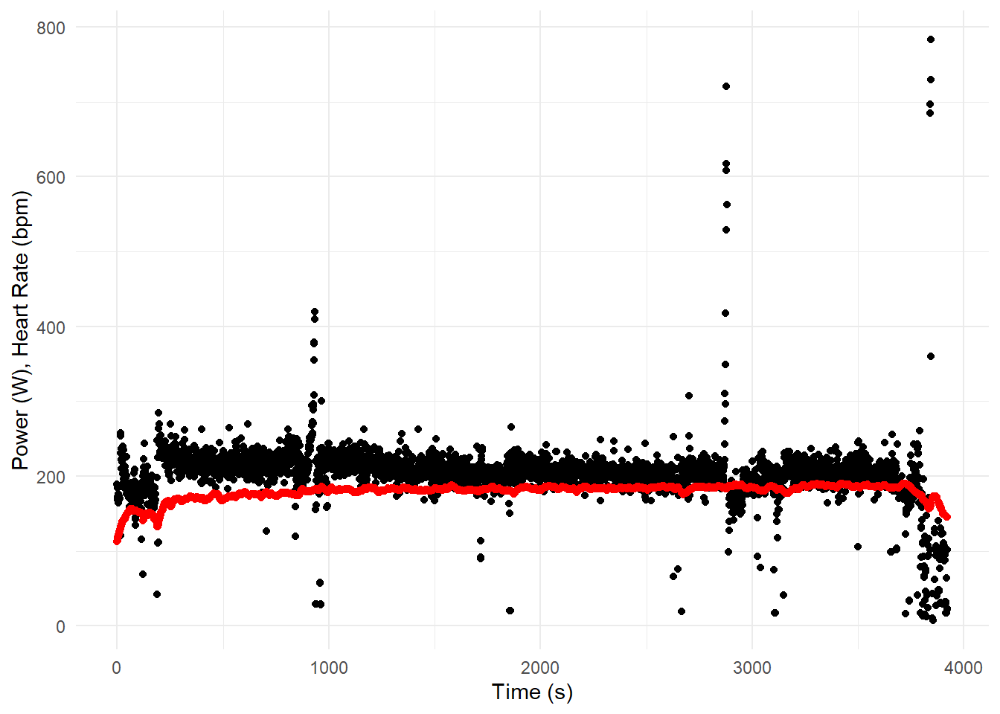
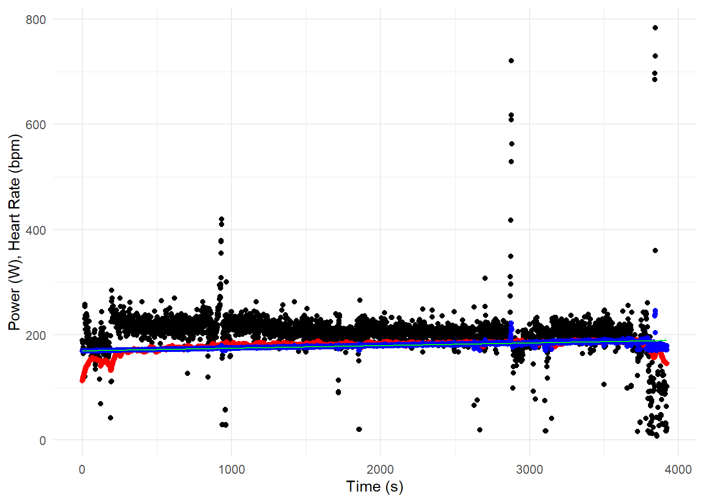

Modelling Cardia Drift
Using Linear Regressions to Model Cardia Drift Using GPS Data
Tracking Heart Rate
Smart watches provide a somple method to track your heart rate throughout your day. Heart rate can provide feedback on sleep quality, training readiness, and overall recovery rates.
Endurance athletes also use heart rate to estimate their max aerobic capacity (VO2max) and training intensity levels. During extended training sessions, there is an upward trend in athletes’ heart rate while working at the same intensities. This phenomenon is called cardiac drift.
We'll never share or sell your email address. By subscribing, you agree with Revue’s Terms of Service and Privacy Policy.
Cardiac Drift
The upward trend in an athlete’s heart rate is multifactorial. The primary causes are dehydration and accumulation of metabolites.
Dehydration decreases blood plasma levels which forces the heart to work harder to deliver the necessary blood supply to the working muscles. The decreased blood plasma levels also affects the ability for the blood to accept metabolites that accumulate in working muscles.
To contract, muscles require energy. Endurance athletes predominantly rely on aerobic energy sources like carbohydrates and fat. The breakdown of these energy sources releases by-products that interfere with how efficient the muscle can contract. Therefore, it is important for these by-products to be expelled from the muscle cells. As water levels in the blood diminish, there is less drive for these by-products to exit the cell. Instead, they interfere with the mechanisms in the muscle cell that allow it to contract. This results in less forceful contractions and slower speeds.
When an athlete wants to maintain a given pace, they need to overcome these by-products. To do so, they heart increases its pace to deliver more energy to the muscles and maintain the needed amount of force.
Load the packages
library(tidyverse) # for tidy codeLoad the Data
The data is available on my GitHub repository and can be downloaded using the code below.
url <- "https://github.com/aaronzpearson/midsprint-blog-data/raw/main/2017_01_31_18_36_44.csv"
gps_data <- read_csv(url)The data structure:
summary(gps_data) secs km power hr cad
Min. : 0.0 Min. :0 Min. : 0.0 Min. :113.0 Min. : 0.00
1st Qu.: 986.8 1st Qu.:0 1st Qu.:193.0 1st Qu.:177.0 1st Qu.: 92.00
Median :1973.5 Median :0 Median :206.0 Median :182.0 Median : 93.00
Mean :1973.5 Mean :0 Mean :196.8 Mean :178.7 Mean : 90.95
3rd Qu.:2960.2 3rd Qu.:0 3rd Qu.:216.0 3rd Qu.:185.0 3rd Qu.: 94.00
Max. :3947.0 Max. :0 Max. :783.0 Max. :190.0 Max. :158.00
alt
Min. :-3.00000
1st Qu.:-1.00000
Median : 0.00000
Mean :-0.02067
3rd Qu.: 1.00000
Max. : 2.40000 Cleaning the Data
To clean the data, we’ll remove when the athlete did not record any data.
gps_data <- gps_data %>% # write over initial data set
# not often recommended, but safe in this case
filter(
power > 0, # only keep data when the athlete was working
hr > 0 # remove data where the hr monitor was not being worn
)Visualizing the Data
Plotting heart rate and power versus time.
options(repr.plot.width = 14, repr.plot.height = 8) # set plot size
theme_set(theme_minimal()) # set the global theme
ggplot(gps_data, aes(x = secs)) + # only set x-axis because of 2 dependent variables
geom_point(aes(y = power), color = "black") +
geom_point(aes(y = hr), colour = "red") +
xlab("Time (s)") + ylab("Power (W), Heart Rate (bpm)") 
The Linear Model
Below is some code to visualize an athlete’s increase in heart-rate while working at nearly the same rate for 45 minutes.
fit <- lm(hr ~ power:secs, data = gps_data) # only includes power-time interaction term
summary(fit) # overview of model fit
Call:
lm(formula = hr ~ power:secs, data = gps_data)
Residuals:
Min 1Q Median 3Q Max
-83.284 -1.073 2.029 4.234 19.125
Coefficients:
Estimate Std. Error t value Pr(>|t|)
(Intercept) 1.694e+02 2.605e-01 650.3 <2e-16 ***
power:secs 2.522e-05 5.771e-07 43.7 <2e-16 ***
---
Signif. codes: 0 '***' 0.001 '**' 0.01 '*' 0.05 '.' 0.1 ' ' 1
Residual standard error: 8.43 on 3820 degrees of freedom
Multiple R-squared: 0.3333, Adjusted R-squared: 0.3332
F-statistic: 1910 on 1 and 3820 DF, p-value: < 2.2e-16Although the goodness-of-fit isn’t great (r^2: 0.33, RSE: 8.43), it is inconsequential for the rest of the example.
We can add the fitted model to the current data set and then visualize the outputs.
gps_data$fitted <- fitted(fit)Below, you’ll note that the fitted model is not linear. This is because of the interaction between power and time. That is, when there is a spike in the interaction term, we’d anticipate a spike in heart rate as well.
If we did not include the interaction term and only included time, the model would be linear. This is seen in the green line that is fit using geom_smooth and the secs variable.
ggplot(gps_data, aes(x = secs)) + # only set x-axis because of 2 dependent variables
geom_point(aes(y = power), color = "black") +
geom_point(aes(y = hr), colour = "red") +
geom_point(aes(y = fitted), colour = "blue") + # fitted values
geom_smooth(aes(y = hr), colour = "green", size = 0.5, method = "lm") + # uses "lm" (linear model) to fit trendline
xlab("Time (s)") + ylab("Power (W), Heart Rate (bpm)")
Predicted Outcomes
Using some quick math, we can estimate the athlete’s heart rate, Since there are spikes in power output, we’ll e conservative and use its 75th percentile.
quantile(gps_data$power); quantile(gps_data$secs) 0% 25% 50% 75% 100%
7 195 206 217 783 0% 25% 50% 75% 100%
0.00 979.25 1934.50 2914.75 3922.00 Manually calculating the athlete’s fitted heart rate 3/4 through the race results in an increase of 16 which results in an increase from 169 to approximately 184 beats per minute while the athlete works at 217 kW.
In the end, we see that the athlete’s heart rate is expected to increase by 16 beats per minute after 45-50 minutes of sustained exercise.
Application
This information can be applied to the critical velocity model. The external expression of an increase in heart rate is the decrease in an athlete’s critical velocity. As such, we should expect to see that the athlete either relies more on anaerobic energy over time to sustain a given pace or that their pace decreases to maximize their use of aerobic energy.
We'll never share or sell your email address. By subscribing, you agree with Revue’s Terms of Service and Privacy Policy.